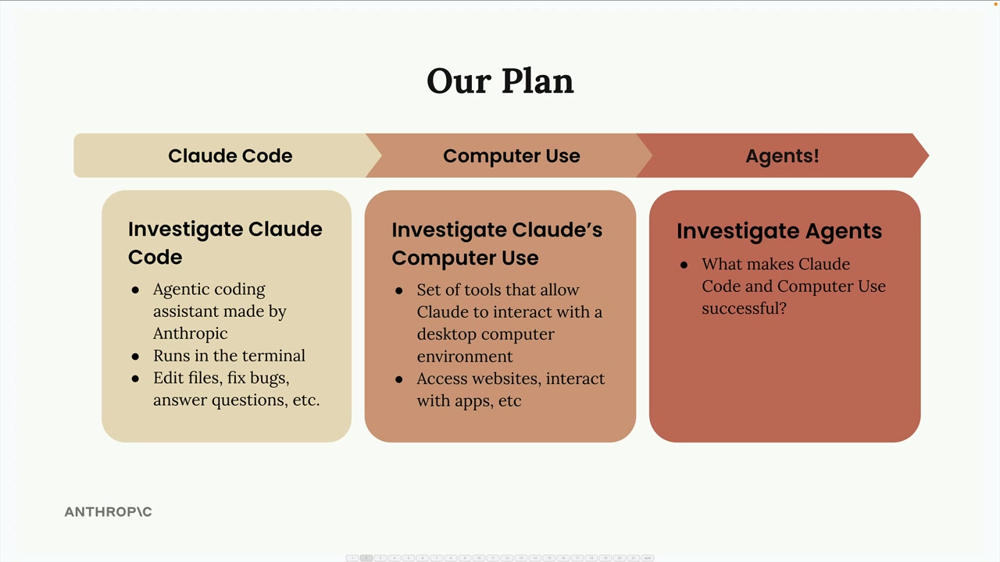

Приложения Anthropic
Чему научитесь
Видео 0:43 и текст урока
К концу урока вы сможете:
- рассказать, что такое Claude Code и Computer Use;
- объяснить, почему эти приложения — хорошие примеры агентов.
Видео и текст урока.
Смотреть урок на Skilljar Anthropic apps · 0:43В этом модуле мы разберём два мощных приложения, созданных Anthropic: Claude Code и Computer Use. Это не просто полезные инструменты сами по себе — это отличные примеры AI-агентов в действии. Разобравшись, как они устроены, вы получите прочную основу, чтобы позже строить собственных агентов.
Наш план

Мы пойдём по шагам, постепенно углубляя понимание:
- Claude Code — начнём с этого агентного помощника по программированию, который работает в терминале;
- Computer Use — разберём набор инструментов, позволяющий Claude работать с настольными приложениями;
- Агенты — поймём, что делает эти приложения успешными агентами.
Claude Code
Claude Code — помощник по программированию в терминале, который помогает с самыми разными задачами разработки. Представьте, что Claude доступен прямо в командной строке и готов:
- редактировать файлы и исправлять ошибки;
- отвечать на вопросы по коду;
- помогать с рабочими процессами разработки.
Мы пройдём весь процесс установки, а затем поработаем с Claude Code на небольшом учебном проекте, чтобы вы увидели, как именно он действует на практике.
Computer Use
Computer Use заметно расширяет возможности Claude. Это набор инструментов, которые позволяют Claude работать в полноценной среде настольного компьютера. То есть Claude может:
- открывать сайты и пользоваться интернетом;
- работать с настольными приложениями;
- выполнять задачи, для которых нужно ориентироваться в графическом интерфейсе.
По сравнению с чисто текстовым взаимодействием это резко расширяет круг возможного.
Почему это важно для агентов
И Claude Code, и Computer Use — отличные учебные примеры для понимания агентов. Они показывают ключевые принципы, благодаря которым агенты эффективны:
- подключение и использование инструментов;
- выполнение задач в несколько шагов;
- взаимодействие со средой;
- самостоятельное решение задач.
Изучив эти реальные реализации, вы поймёте, что делает Claude Code и Computer Use успешными, и это пригодится, когда вы будете разрабатывать собственных агентов.
Начнём с установки Claude Code в следующем уроке.
Дальше
Следующий урок — что умеет Claude Code и как его установить.
Оригинал урока: Anthropic apps.